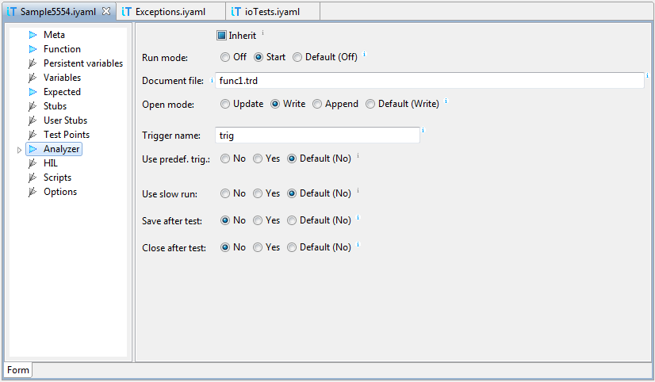

Note: Append mode is currently available for coverage only. Profiler and trace data are removed on each start.
To create distinct analyzer file name for each test case, we can use host variables in field Document file. If we type $, a list of porposals with available host variables is shown. Select a variable and its description will appear.
For example, if file name is defined as
${_testId}-${_function}.trd
then the two variables will be replaced with current test ID and
the name of function under test. This way each test case gets analyzer
file with different but meaningful name.